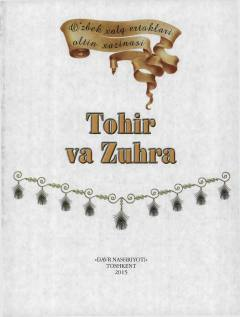

TVTohir va Zuhra haqidagi mashhur o'zbek xalq ertagi.
Ushbu kitob o'zbek xalq og'zaki ijodining durdonalaridan biri bo'lgan mashhur «Tohir va Zuhra» ertagini o'quvchilarga taqdim etadi. Asar qadimiy afsona va muhabbat, sadoqat hamda jasorat mavzularini o'z ichiga oladi. Bolalar va keng kitobxonlar ommasi uchun mo'ljallangan.